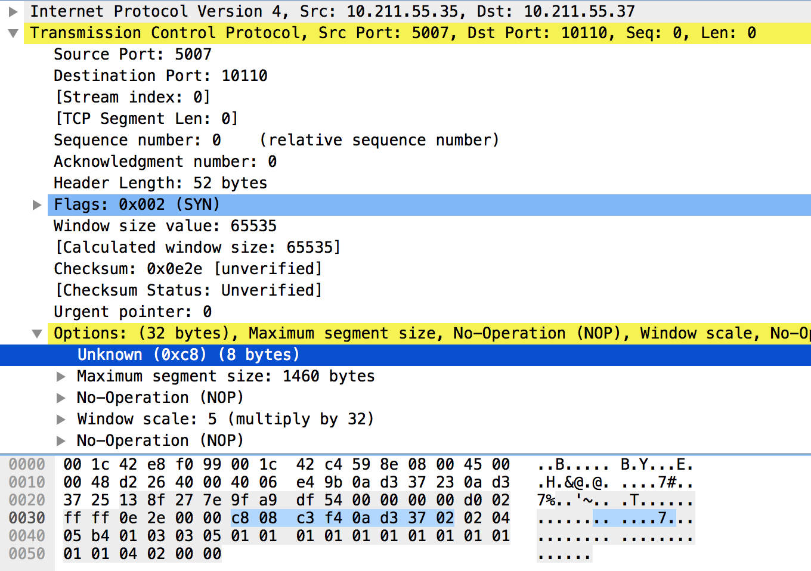

安装
测试环境 centos 7.3
内核版本 3.10.0-514
安装编译环境
1 | yum install bc xmlto asciidoc hmaccalc python-devel newt-devel pesignzlib-devel audit-libs-devel numactl-devel pciutils-devel ncurses-devel pesign elfutils-devel binutils-devel perl-ExtUtils-Embed rpm-build |
编译内核模块
准备内核源码
创建builder用户
useradd builder
下载并安装当前内核版本的src包以及devel包
1 | wget http://vault.centos.org/7.3.1611/os/x86_64/Packages/kernel-devel-3.10.0-514.el7.x86_64.rpm |
在builder家目录下产生了rpmbuild目录
释放内核源码到rpmbuild/BUILD目录
1 | rpmbuild -bp rpmbuild/SPECS/kernel.spec |
打补丁
在taobao的toa.patch(1.0.0.0)基础上，去掉ipv6支持，适配centos7内核，见附件
centos 7.3 toa补丁
添加配置
1 | echo -e '\n# toa\nCONFIG_TOA=m' >> .config |
编译
1 | make oldconfig |
加载toa模块
cp net/toa/toa.ko /tmp
切换到root用户, 加载模块
1 | su - root |
持久化
1 | cp /tmp/toa.ko /lib/modules/`uname -r`/extra/ |
reboot
参考资料
http://blog.51cto.com/shanks/1393434
http://www.hl10502.com/2017/09/14/centos-build-nbd/
http://blog.csdn.net/wwyyxx26/article/details/6325843
https://github.com/alibaba/ali_kernel_rpm/blob/master/patches.taobao/toa.patch
原理分析
fullnat 发给 realserver 的 tcp 包添加了一个 OPTION，用于传递客户端真实地址，real server 通过 toa 模块读取此 OPTION，更改 socket 属性， 使应用层能读取真实的客户端ip端口
toa option数据结构定义
1 | struct toa_data |
tcpdump抓包后，由wireshark分析，tcp封包细节如图

可以看到，经lvs-fullnat模式封包后, TCP包里新增了一个option，
- code 为 c8，转十进制后为 200
- 08 为 size，接下来读取后 6 个字节
- 前两个字节 c3 f4 为端口号，转码后int(‘0xc3f4’, 16)后为 50164
- 后4个为ip地址，分别转码后得到 10 211 55 2
于是得到来源客户端为 10.211.55.2:50164
toa模块是如何处理这个option的？
当 socket 执行 accept 操作建立连接后，程序可以使用getpeername函数来得到连接对端的 ip 和端口，内核源码里最终是调用了 inet_getname 函数
原本此函数返回的是 L3 层的 source ip，和 L4 层的 source port，但是
toa 模块修改了此行为，它从 L4 层取出上游服务写入的tcp option，找到 ip 和 端口，取代了返回结果。
替换 inet_getname 函数
首先，toa 定义了一个函数 inet_getname_toa 来替代默认的 inet_getname 函数
1 | inet_stream_ops_p->getname = inet_getname_toa; |
inet_getname_toa函数首先调用默认的inet_getname，得到结果后再做额外的处理
检测socket结构体中
sk_user_data是否为空，如果不为空，读取其内容判断是否为
toa option，如果是，解析出ip和端口，替换inet_getname函数的返回结果
sk_user_data（RPC layer private data）又是如何设置的？
同样的，toa模块定义了函数tcp_v4_syn_recv_sock_toa，替换了默认的tcp_v4_syn_recv_sock
1 | ipv4_specific_p->syn_recv_sock = tcp_v4_syn_recv_sock_toa; |
此函数首先调用默认的tcp_v4_syn_recv_sock，得到 socket，遍历tcp options，如果找到toa option(opcode==200)，解析其内容，得到源ip和端口信息，写入此socket结构体的属性sk_user_data中，返回 socket, 然后应用程序通过getpeername方法就能获得此 socket 连接的来源ip和端口了